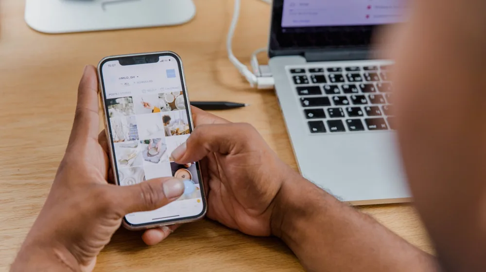

중고폰·노트북 살 때 돈 버리는 실수 피하는 5가지 필수 체크리스트
사진: Julio Lopez / Pexels (무료 이미지, 출처 표기)
1. 외관과 액정 상태: 보이지 않는 미세한 결함 잡아내기

중고 전자기기를 직거래할 때는 첫인상에 속지 않는 것이 중요합니다. 외관에 큰 흠집이 없더라도 모서리나 충전 단자 부위의 찍힘을 먼저 확인해야 합니다. 충격으로 인해 내부 회로에 이상이 생겼을 수 있기 때문입니다.
디스플레이의 경우 화면 전체를 밝은 흰색 배경으로 설정한 뒤 번인(Burn-in, 디스플레이 열화로 화면에 영구적인 얼룩이 남는 현상)이나 잔상 여부를 꼼꼼히 관찰하세요. 화면의 모든 영역을 터치해 보며 터치 오작동이 일어나는 부분이 없는지도 반드시 손가락으로 밀어가며 테스트해야 합니다.
2. 배터리 수명 및 하드웨어 성능 자가 진단법
중고 기기 구매 후 가장 흔하게 발생하는 추가 지출이 바로 배터리 교체 비용입니다. 스마트기기의 설정 메뉴에서 배터리 성능 최대치를 사전에 조회하는 것은 필수입니다.
- 아이폰/아이패드: [설정] > [배터리] > [배터리 성능 상태]에서 수치 확인 (80% 이상을 권장합니다)
- 갤럭시 스마트폰: 'Samsung Members' 앱 내 자가 진단 메뉴를 통해 배터리 수명('좋음' 또는 '보통' 단계) 및 하드웨어 정상 여부 확인
- 윈도우 노트북: 명령 프롬프트(CMD)를 관리자 권한으로 실행한 뒤
powercfg /batteryreport를 입력하여 원래 설계 용량 대비 현재 완충 가능 용량을 직접 계산
3. 도난·분실 및 분실 단말기(정상 해지) 여부 조회
스마트폰이나 태블릿 등 셀룰러 기능을 지원하는 기기는 '도난 및 분실 기기'인지 가장 먼저 필터링해야 합니다. 정상 해지가 되지 않았거나 확정 기변(기기 소유권을 본인 명의로 완전 이전하는 것)이 불가능한 폰은 추후 개통이나 사용에 큰 제약이 따릅니다.
기기의 IMEI(국제단말기식별번호, 15자리 고유 식별번호)를 미리 전달받거나 현장에서 확인한 후, 한국정보통신진흥협회(KAIT)에서 운영하는 '이동전화 단말기 자급제' 공식 사이트에 접속하여 분실·도난 여부와 25% 선택약정 할인 대상인지 꼭 조회해 보시기 바랍니다. 2026년 기준 제도가 일부 변경될 수 있으니 최신 조회 화면 안내에 따라 진행하십시오.
4. 중고 거래 주요 플랫폼별 특징 비교
어디서 구매하느냐에 따라 보증 유무와 거래 안전성이 달라집니다. 개인 간 직거래 플랫폼과 전문 리퍼브 매장 등 각 경로의 장단점을 아래 표로 비교했습니다.
정확한 수수료나 보증 범위는 각 플랫폼의 정책 변경에 따라 달라질 수 있으므로 구매 시점에 공식 앱이나 웹사이트를 통해 다시 확인하시기 바랍니다.
5. 현장 직거래 시 최종 체크리스트
판매자를 만났을 때 당황하지 않으려면 미리 준비물을 챙겨야 합니다. 와이파이가 없는 환경일 수 있으므로 모바일 핫스팟을 켜서 인터넷 연결 상태를 점검하고, 보조배터리와 케이블을 가져가 기기가 정상적으로 충전되는지 꽂아봅니다. 이어폰이나 블루투스 기기를 가져가 스피커 및 오디오 연결 상태도 놓치지 않고 확인하는 것이 좋습니다.
마지막으로 금융사기 예방을 위해 계좌 이체 직전 경찰청 '사이버캅' 또는 '더치트(The Cheat)' 앱에 판매자의 연락처와 계좌번호를 검색하여 최근 사기 신고 이력이 있는지 조회하는 절차를 생략하지 마십시오. 소중한 비용을 아끼기 위한 최소한의 안전장치입니다.
🔗 이 글도 함께 보면 좋아요: 비밀번호 관리자 앱 완벽 비교: 해킹 막는 나에게 딱 맞는 선택법
관련 추천 상품
이 포스팅은 쿠팡 파트너스 활동의 일환으로, 이에 따른 일정액의 수수료를 제공받습니다.